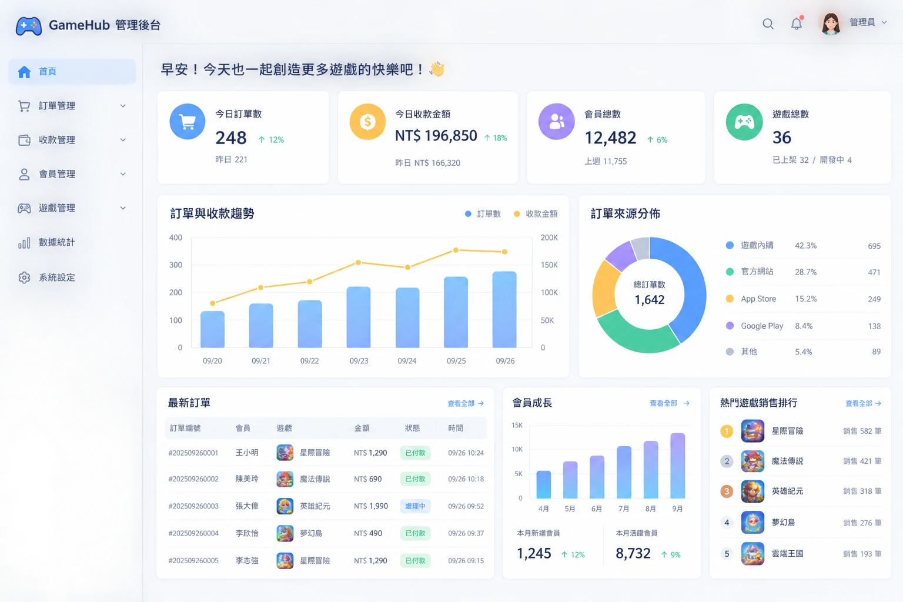
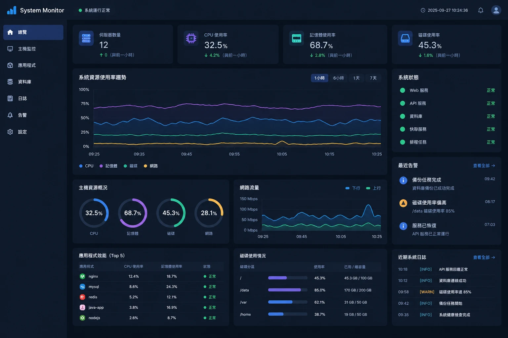
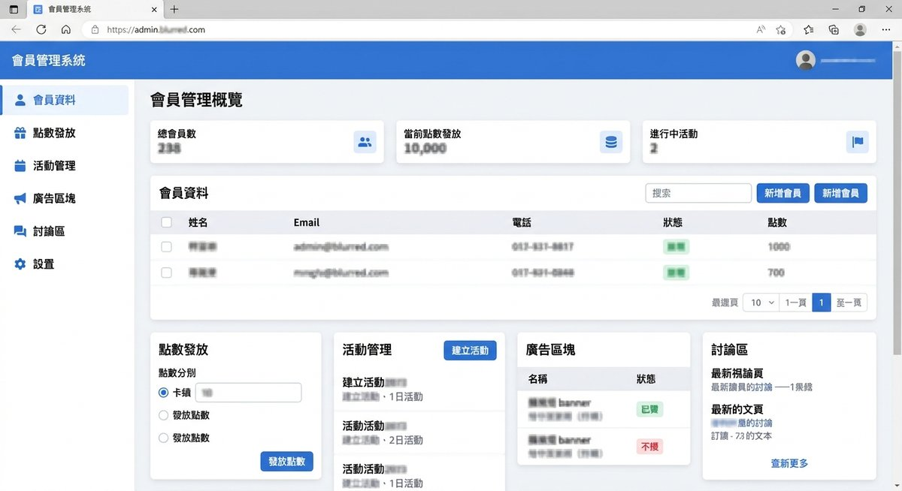
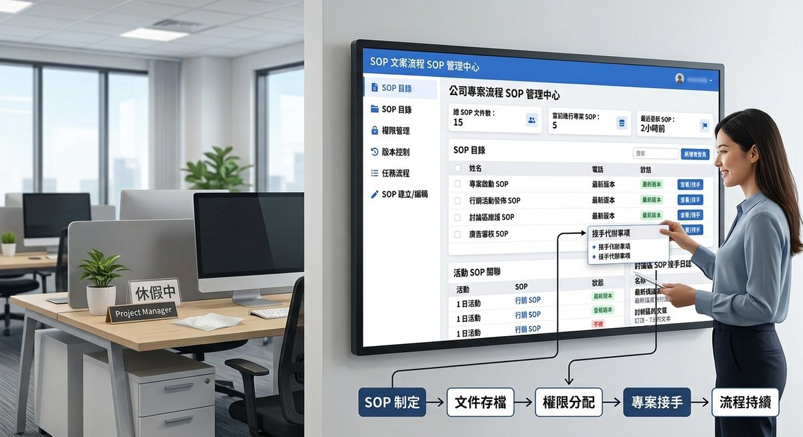

AI 數位顧問 × 紫微命理諮詢
工作卡住、人生卡關
工作卡住、人生卡關
我陪你把事情看清楚
一對一、說人話。
把 AI 工具變成你用得上的流程，把命盤變成你做得了決定的依據。
你是不是也這樣
卡住的時候，心裡常常是這些聲音
關於工作
- 「同樣的事每天重複做：回訊息、整理資料、做報表，一天就過去了。」
- 「AI 工具買了、訂閱了，卻不知道怎麼用在自己的生意上。」
- 「想導入 AI，但不知道該從哪個流程開始，也怕花錢做白工。」
我會陪你：找出最耗時的環節，先挑一個最值得改的，做成你和夥伴真的會用的流程。
關於人生
- 「做了好多年，突然開始懷疑：這真的是我想要的嗎？」
- 「想換跑道，卻說不清楚自己到底適合什麼。」
- 「重要的選擇一個接一個，希望自己做決定時更有底氣。」
我會陪你：用命盤看見你的特質與節奏，一起整理出下一步，讓選擇不只靠一時的情緒。
我做過的服務與經驗
7 年系統開發與維護
5 家跨產業的專案經驗
2 年紫微斗數學習與實戰

01訂單、收款、會員，每一筆都對得上
遊戲公司收款系統：讓每一筆錢從哪裡來、去了哪裡，都查得到。
客人一直問同樣的問題？
參與線上即時客服系統開發，明白客服最累的是一整天重複回答。

03數字一有異常，馬上知道
企業網站流量即時監控，以及廣告成效分析系統。

04會員、點數、活動，不用再靠人工盯
連鎖餐飲員工 App 與管理後台，營運同事自己就能上架內容。

05把「只有我會」變成人人都會的 SOP
規劃功能上線的每個步驟，換誰接手，照著做都不會出錯。
※ 無法公開公司內部系統，圖片為情境圖
諮詢過的人這樣說
來自紫微命理諮詢的真實回饋
「就像有張自己專屬的地圖，趨吉避凶，徐徐前進」
「廣度就是我的創造力跟靈感連結」
「像朋友聊天一樣，心裡踏實了不少」
你現在需要的，是哪一種幫助？
兩種服務各自獨立，依你現在的需要選一個就好
工作效率
AI 數位顧問
找出工作裡最耗時的環節，導入真的用得上的 AI 工具，把時間還給你
- 每天被重複又瑣碎的作業綁住
- 想用 AI，卻不知道從哪個工具開始
- 流程散亂，需要整理成清楚的 SOP
人生方向
紫微命理諮詢
用命盤看懂自己的特質與人生節奏，在轉折點上，做出更有底氣的選擇
- 正在猶豫要不要換工作、轉換跑道
- 很努力，卻不確定自己真正想要什麼
- 關係或人際，一直重複相似的模式